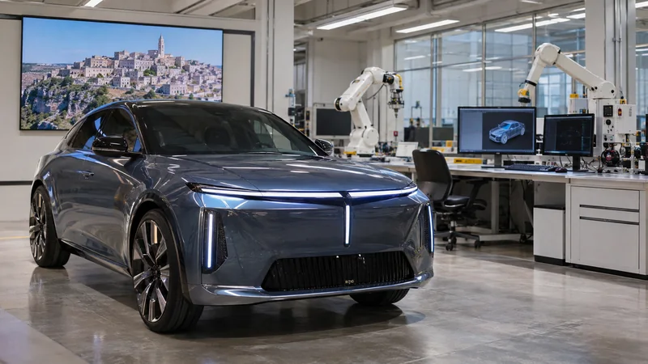

Un viaggio nel cuore della Basilicata per presentare la Nuova Lancia Gamma proprio nei luoghi da cui provengono molte delle donne e degli uomini che, con il loro lavoro, contribuiscono ogni giorno alla sua produzione nello stabilimento Stellantis di Melfi.
Tecnologia
La Nuova Lancia Gamma incontra la Basilicata
Un viaggio nel cuore della Basilicata per presentare la Nuova Lancia Gamma proprio nei luoghi da cui provengono molte delle donne e degli uomini che, con il loro lavoro.
